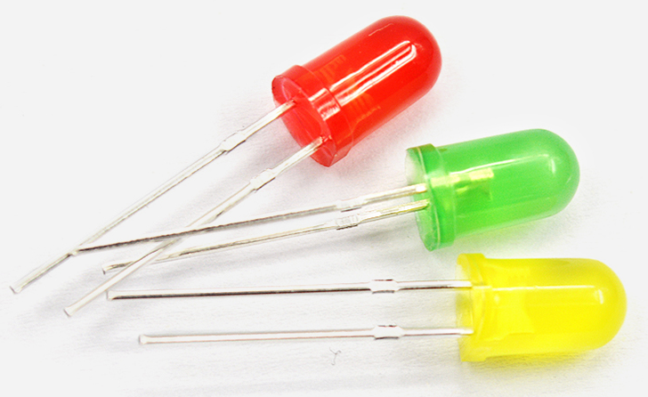
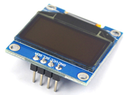

板載資源的使用
本章主要是通過一些示例項目，闡述 Leaf-S3 主控板的外設基本使用方法，通過下面的項目，您可以進行修改完成您的自己的項目。
其中 Leaf-S3 外設主要包括：UART、I2C、SPI、ADC、PWM、DAC等。
開始之前的準備
BPI-Leaf-S3 開發板上的typec使用的是ESP32-S3的原生USB接口，而不是傳統的USB轉TLL芯片。
為了讓您的開發板能正確下載程序，您需要將BPI-Leaf-S3設置為下載模式，有以下兩種方法：
通過USB連接到電腦，按下BOOT鍵，再按一下Reset鍵並鬆開，最後鬆開BOOT鍵。
在斷開所有供電的狀態下，按住BOOT鍵，然後將開發板插上電腦，最後鬆開BOOT鍵。
這時候可以在設備管理器中看到一個多的COM口

在IDE中選擇這個端口

項目一 串口實驗
在最開始的章節中，我們上傳了一個 Blink 閃爍程序來測試板子上的 LED 狀態燈。現在，我們使用 UART 串口，每秒打印一次計時數據。
所需元件
Leaf-S3 主板 X 1

硬件連接
此項目不需要其他傳感器，所以只需要把Leaf-S3用USB連到電腦就能用。
輸入代碼
打開 Arduino IDE。儘管可以直接複製代碼，我們還是建議您自己手動輸入代碼熟悉下。
代碼如下:
展開查看
void setup()
{
Serial.begin(115200); //設置串口通信波特率
}
void loop()
{
static unsigned long i = 0; //定義變量i
Serial.println(i++); //i加一後輸出i
delay(1000); //延時1秒
}
輸入完成後，點擊“編譯”檢查代碼有無錯誤。確保沒有錯誤後就可以開始上傳了，點擊“上傳”之後 IDE 會把代碼發送給 Leaf-S3 主板。上傳完成之後，你需要按一下復位鍵，這樣代碼就能正常運行了
實驗現象
完成之前步驟的上傳後，打開 Arduino IDE 自帶的串口監視器，可以看到如下的打印信息：

項目二 PWM(呼吸燈)
呼吸燈，即讓 Leaf-S3 通過 PWM 驅動 LED 燈，實現 LED 的亮度漸變，看起來就像是在呼吸一樣。關於 PWM 的解釋，請閱覽知識擴展部分。
所需元件
Leaf-S3 主板 X 1
LED X 1 (建議串聯一個電阻限流)

硬件連接
將LED連接到Leaf-S3的GPIO13就可以了，長的那個腳接GPIO13，短的接到GND
輸入代碼
打開 Arduino IDE。儘管可以直接複製代碼，我們還是建議您自己手動輸入代碼熟悉下。
代碼如下:
展開查看
#define LED_CHANNEL_0 0 //設置通道0
#define LED_TIMER_13_BIT 13 //設置13位定時器
#define LED_BASE_FREQ 5000 //設置定時器頻率位5000Hz
#define LED_PIN 13 //設置LED燈
int brightness = 0; // LED亮度
int fadeAmount = 1; // LED數量
//設置led燈的亮度
void ledcAnalogWrite(uint32_t value, uint32_t valueMax = 255) {
//計算佔空比
uint32_t duty = (LED_BASE_FREQ / valueMax) * min(value, valueMax);
//設置佔空比
ledcWrite(LED_CHANNEL_0, duty);
}
void setup() {
ledcSetup(LED_CHANNEL_0, LED_BASE_FREQ, LED_TIMER_13_BIT); ledcAttachPin(LED_PIN, LED_CHANNEL_0);
}
void loop() {
ledcAnalogWrite(brightness); brightness += fadeAmount;
if (brightness <= 0 || brightness >= 255) {
fadeAmount = -fadeAmount;
}
delay(30);
}
輸入完成後，點擊“編譯”按鈕檢查代碼是否有錯誤。確定沒有錯誤後可以開始上傳了，點擊“上傳”按鈕 。 IDE 會把代碼發送給 Leaf-S3 主板。上傳完成後您就可以看見Type-C旁邊的LED 燈開始“呼吸”了！
現在讓我們來回顧一下代碼和硬件，看看它是如何工作。
知識學習
什麼是 PWM 控制信號？
PWM（pulse-width modulation）脈衝寬度調製，MCU（微控制器）通過對開關器件的通斷進行控制，使輸出端得到一系列幅值相等的脈衝，用這些脈衝來代替正弦波或所需的波形。如下圖所示：

其中，tON 是高電平持續時間，tPWM 是 PWM 波的周期，tPWM-tON 是低電平持續時間，佔空比是指高電平持續時間佔整個週期的比例，即 D=ton/tPWM 。
代碼分析
Leaf-S3 的 PWM 比普通的 Arduino UNO 高級的多，設置上不能簡單的使用analogWrite 函數來驅動 PWM，而是需要設置 timer 函數，以及相關的頻率參數等才能工作。
#define LEDC_CHANNEL_0 0
定義了定時器使用的通道，Leaf-S3 總共有 16 個通道，這裡用的是通道 0。
#define LEDC_TIMER_13_BIT 13
定義了定時器為 13 位定時器，即定時器最大計數為 2 的 13 次方。
#define LEDC_BASE_FREQ 5000
這是設置定時器的頻率，單位是 Hz。接下來的 brightness 和 fadeAmount 參數分別表示 PWM 的佔空比和每次變化的數值。
void ledcAnalogWrite(uint32_t value, uint32_t valueMax = 255)
這個函數是計算 PWM 佔空比和設置 PWM 佔空比，類似 Arduino 的 analogWrite 函數，可以看到，傳遞參數的最大值是 255，這是為了和 analogWrite 兼容。
ledcSetup(LEDC_CHANNEL_0, LEDC_BASE_FREQ, LEDC_TIMER_13_BIT);
ledcAttachPin(LED_PIN, LEDC_CHANNEL_0);
這兩個函數是 Leaf-S3 定時器設置函數，函數原型及原理這裡不講述，如果您感興趣可以看看底層源碼（源碼地址：C:\Users\“your-PC”\AppData\Local\Arduino15\packages\esp32\ hardware\ adafruit_metro_esp32s2 \0.0.3\libraries\ESP32\），這裡只需要知道怎麼用這些函數來設置相關的 timer 就可以了。
關於什麼是 PWM 信號，在前面已經闡述過了，這裡不再說明。
注意：Leaf-S3 的任何引腳都可以配置成 PWM 輸出，您可以嘗試著修改代碼，完成您的項目。
項目三 ADC
ADC（模數轉換器即 A/D 轉換器），是指將模擬信號轉變成數字信號。 Leaf-S3 的ADC 是13位的，最大輸出值為 8191，而 Arduino UNO 是 10 位的，最大輸出值是 1023，因此，在精度上比Arduino UNO 要高，而且轉換速率快，且在使用上兼容 Arduino analogRead 函數，直接讀取即可。
所需元件
模擬角度傳感器 X 1
麵包板 X 1

Leaf-S3 主板 X 1
硬件連接
把 電位計插接到 Leaf-S3 主板上，然後將模擬角度傳感器插接到 IO2（實驗中用的是IO2）。元件連接好後，使用 USB 線連接 Leaf-S3 和電腦。
輸入代碼
打開 Arduino IDE。儘管可以直接複製代碼，我們還是建議您自己手動輸入代碼熟悉下。代碼如下:
展開查看
void setup() {
// put your setup code here, to run once:
Serial.begin(115200);
}
void loop() {
// put your main code here, to run repeatedly:
Serial.println(analogRead(2));
delay(100);
}
輸入完成後，點擊“編譯”檢查代碼有無錯誤。確保沒有錯誤後就可以開始上傳了，點擊“上傳”之後IDE 會把代碼發送給 Leaf-S3 主板。上傳完成後，打開 Arduino IDE 的串口監視器，旋轉模擬角度傳感器，可以看到串口監視器中的數值變化，如下圖所示：

代碼分析
由於Leaf-S3 的 ADC 在使用上完全兼容 Arduino，因此這裡不再對analogRead 函數進行過多的講解。
注意：如果您對 Arduino 的基本函數不是特別熟悉，您可以點擊鏈接進行學習。
項目四 I2C
Leaf-S3 的 I2C 可以配置到任意 I/O 口，您可以通過傳遞相關參數進行配置。為了方便使用，我們已經將 I2C 進行了默認配置，在使用上完全兼容 Arduino，默認配置引腳可以在第一章簡介中查看到。本項目是基於 I2C 默認配置，驅動 OLED 顯示屏。
所需元件
I2C OLED-12864 顯示屏 X 1

麵包板
X 1
Leaf-S3 主板 X 1
硬件連接
把Leaf-S3 主板插到麵包板上，然後將 OLED顯示屏插接到 I2C 接口。 （SDA是33，SCL是34）元件連接好後，使用 USB 線連接 Leaf-S3 和電腦。
輸入代碼
打開 Arduino IDE。儘管可以直接複製代碼，我們還是建議您自己手動輸入代碼熟悉下。代碼如下:
展開查看
#include
int UG2864Address = 0x3C;//OLED UG2864器件7位地址
prog_char F8X16[][16] PROGMEM =
{
0x00,0x00,0x00,0x00,0x00,0x00,0x00,0x00,0x00,0x00,0x00,0x00,0x00,0x00,0x00,0x00,// 0
0x00,0x00,0x00,0xF8,0x00,0x00,0x00,0x00,0x00,0x00,0x00,0x33,0x30,0x00,0x00,0x00,//!1
0x00,0x10,0x0C,0x06,0x10,0x0C,0x06,0x00,0x00,0x00,0x00,0x00,0x00,0x00,0x00,0x00,//"2
0x40,0xC0,0x78,0x40,0xC0,0x78,0x40,0x00,0x04,0x3F,0x04,0x04,0x3F,0x04,0x04,0x00,//#3
0x00,0x70,0x88,0xFC,0x08,0x30,0x00,0x00,0x00,0x18,0x20,0xFF,0x21,0x1E,0x00,0x00,//$4
0xF0,0x08,0xF0,0x00,0xE0,0x18,0x00,0x00,0x00,0x21,0x1C,0x03,0x1E,0x21,0x1E,0x00,//%5
0x00,0xF0,0x08,0x88,0x70,0x00,0x00,0x00,0x1E,0x21,0x23,0x24,0x19,0x27,0x21,0x10,//&6
0x10,0x16,0x0E,0x00,0x00,0x00,0x00,0x00,0x00,0x00,0x00,0x00,0x00,0x00,0x00,0x00,//'7
0x00,0x00,0x00,0xE0,0x18,0x04,0x02,0x00,0x00,0x00,0x00,0x07,0x18,0x20,0x40,0x00,//(8
0x00,0x02,0x04,0x18,0xE0,0x00,0x00,0x00,0x00,0x40,0x20,0x18,0x07,0x00,0x00,0x00,//)9
0x40,0x40,0x80,0xF0,0x80,0x40,0x40,0x00,0x02,0x02,0x01,0x0F,0x01,0x02,0x02,0x00,//*10
0x00,0x00,0x00,0xF0,0x00,0x00,0x00,0x00,0x01,0x01,0x01,0x1F,0x01,0x01,0x01,0x00,//+11
0x00,0x00,0x00,0x00,0x00,0x00,0x00,0x00,0x80,0xB0,0x70,0x00,0x00,0x00,0x00,0x00,//,12
0x00,0x00,0x00,0x00,0x00,0x00,0x00,0x00,0x00,0x01,0x01,0x01,0x01,0x01,0x01,0x01,//-13
0x00,0x00,0x00,0x00,0x00,0x00,0x00,0x00,0x00,0x30,0x30,0x00,0x00,0x00,0x00,0x00,//.14
0x00,0x00,0x00,0x00,0x80,0x60,0x18,0x04,0x00,0x60,0x18,0x06,0x01,0x00,0x00,0x00,///15
0x00,0xE0,0x10,0x08,0x08,0x10,0xE0,0x00,0x00,0x0F,0x10,0x20,0x20,0x10,0x0F,0x00,//016
0x00,0x10,0x10,0xF8,0x00,0x00,0x00,0x00,0x00,0x20,0x20,0x3F,0x20,0x20,0x00,0x00,//117
0x00,0x70,0x08,0x08,0x08,0x88,0x70,0x00,0x00,0x30,0x28,0x24,0x22,0x21,0x30,0x00,//218
0x00,0x30,0x08,0x88,0x88,0x48,0x30,0x00,0x00,0x18,0x20,0x20,0x20,0x11,0x0E,0x00,//319
0x00,0x00,0xC0,0x20,0x10,0xF8,0x00,0x00,0x00,0x07,0x04,0x24,0x24,0x3F,0x24,0x00,//420
0x00,0xF8,0x08,0x88,0x88,0x08,0x08,0x00,0x00,0x19,0x21,0x20,0x20,0x11,0x0E,0x00,//521
0x00,0xE0,0x10,0x88,0x88,0x18,0x00,0x00,0x00,0x0F,0x11,0x20,0x20,0x11,0x0E,0x00,//622
0x00,0x38,0x08,0x08,0xC8,0x38,0x08,0x00,0x00,0x00,0x00,0x3F,0x00,0x00,0x00,0x00,//723
0x00,0x70,0x88,0x08,0x08,0x88,0x70,0x00,0x00,0x1C,0x22,0x21,0x21,0x22,0x1C,0x00,//824
0x00,0xE0,0x10,0x08,0x08,0x10,0xE0,0x00,0x00,0x00,0x31,0x22,0x22,0x11,0x0F,0x00,//925
0x00,0x00,0x00,0xC0,0xC0,0x00,0x00,0x00,0x00,0x00,0x00,0x30,0x30,0x00,0x00,0x00,//:26
0x00,0x00,0x00,0x80,0x00,0x00,0x00,0x00,0x00,0x00,0x80,0x60,0x00,0x00,0x00,0x00,//;27
0x00,0x00,0x80,0x40,0x20,0x10,0x08,0x00,0x00,0x01,0x02,0x04,0x08,0x10,0x20,0x00,//<28
0x40,0x40,0x40,0x40,0x40,0x40,0x40,0x00,0x04,0x04,0x04,0x04,0x04,0x04,0x04,0x00,//=29
0x00,0x08,0x10,0x20,0x40,0x80,0x00,0x00,0x00,0x20,0x10,0x08,0x04,0x02,0x01,0x00,//>30
0x00,0x70,0x48,0x08,0x08,0x08,0xF0,0x00,0x00,0x00,0x00,0x30,0x36,0x01,0x00,0x00,//?31
0xC0,0x30,0xC8,0x28,0xE8,0x10,0xE0,0x00,0x07,0x18,0x27,0x24,0x23,0x14,0x0B,0x00,//@32
0x00,0x00,0xC0,0x38,0xE0,0x00,0x00,0x00,0x20,0x3C,0x23,0x02,0x02,0x27,0x38,0x20,//A33
0x08,0xF8,0x88,0x88,0x88,0x70,0x00,0x00,0x20,0x3F,0x20,0x20,0x20,0x11,0x0E,0x00,//B34
0xC0,0x30,0x08,0x08,0x08,0x08,0x38,0x00,0x07,0x18,0x20,0x20,0x20,0x10,0x08,0x00,//C35
0x08,0xF8,0x08,0x08,0x08,0x10,0xE0,0x00,0x20,0x3F,0x20,0x20,0x20,0x10,0x0F,0x00,//D36
0x08,0xF8,0x88,0x88,0xE8,0x08,0x10,0x00,0x20,0x3F,0x20,0x20,0x23,0x20,0x18,0x00,//E37
0x08,0xF8,0x88,0x88,0xE8,0x08,0x10,0x00,0x20,0x3F,0x20,0x00,0x03,0x00,0x00,0x00,//F38
0xC0,0x30,0x08,0x08,0x08,0x38,0x00,0x00,0x07,0x18,0x20,0x20,0x22,0x1E,0x02,0x00,//G39
0x08,0xF8,0x08,0x00,0x00,0x08,0xF8,0x08,0x20,0x3F,0x21,0x01,0x01,0x21,0x3F,0x20,//H40
0x00,0x08,0x08,0xF8,0x08,0x08,0x00,0x00,0x00,0x20,0x20,0x3F,0x20,0x20,0x00,0x00,//I41
0x00,0x00,0x08,0x08,0xF8,0x08,0x08,0x00,0xC0,0x80,0x80,0x80,0x7F,0x00,0x00,0x00,//J42
0x08,0xF8,0x88,0xC0,0x28,0x18,0x08,0x00,0x20,0x3F,0x20,0x01,0x26,0x38,0x20,0x00,//K43
0x08,0xF8,0x08,0x00,0x00,0x00,0x00,0x00,0x20,0x3F,0x20,0x20,0x20,0x20,0x30,0x00,//L44
0x08,0xF8,0xF8,0x00,0xF8,0xF8,0x08,0x00,0x20,0x3F,0x00,0x3F,0x00,0x3F,0x20,0x00,//M45
0x08,0xF8,0x30,0xC0,0x00,0x08,0xF8,0x08,0x20,0x3F,0x20,0x00,0x07,0x18,0x3F,0x00,//N46
0xE0,0x10,0x08,0x08,0x08,0x10,0xE0,0x00,0x0F,0x10,0x20,0x20,0x20,0x10,0x0F,0x00,//O47
0x08,0xF8,0x08,0x08,0x08,0x08,0xF0,0x00,0x20,0x3F,0x21,0x01,0x01,0x01,0x00,0x00,//P48
0xE0,0x10,0x08,0x08,0x08,0x10,0xE0,0x00,0x0F,0x18,0x24,0x24,0x38,0x50,0x4F,0x00,//Q49
0x08,0xF8,0x88,0x88,0x88,0x88,0x70,0x00,0x20,0x3F,0x20,0x00,0x03,0x0C,0x30,0x20,//R50
0x00,0x70,0x88,0x08,0x08,0x08,0x38,0x00,0x00,0x38,0x20,0x21,0x21,0x22,0x1C,0x00,//S51
0x18,0x08,0x08,0xF8,0x08,0x08,0x18,0x00,0x00,0x00,0x20,0x3F,0x20,0x00,0x00,0x00,//T52
0x08,0xF8,0x08,0x00,0x00,0x08,0xF8,0x08,0x00,0x1F,0x20,0x20,0x20,0x20,0x1F,0x00,//U53
0x08,0x78,0x88,0x00,0x00,0xC8,0x38,0x08,0x00,0x00,0x07,0x38,0x0E,0x01,0x00,0x00,//V54
0xF8,0x08,0x00,0xF8,0x00,0x08,0xF8,0x00,0x03,0x3C,0x07,0x00,0x07,0x3C,0x03,0x00,//W55
0x08,0x18,0x68,0x80,0x80,0x68,0x18,0x08,0x20,0x30,0x2C,0x03,0x03,0x2C,0x30,0x20,//X56
0x08,0x38,0xC8,0x00,0xC8,0x38,0x08,0x00,0x00,0x00,0x20,0x3F,0x20,0x00,0x00,0x00,//Y57
0x10,0x08,0x08,0x08,0xC8,0x38,0x08,0x00,0x20,0x38,0x26,0x21,0x20,0x20,0x18,0x00,//Z58
0x00,0x00,0x00,0xFE,0x02,0x02,0x02,0x00,0x00,0x00,0x00,0x7F,0x40,0x40,0x40,0x00,//[59
0x00,0x0C,0x30,0xC0,0x00,0x00,0x00,0x00,0x00,0x00,0x00,0x01,0x06,0x38,0xC0,0x00,//\60
0x00,0x02,0x02,0x02,0xFE,0x00,0x00,0x00,0x00,0x40,0x40,0x40,0x7F,0x00,0x00,0x00,//]61
0x00,0x00,0x04,0x02,0x02,0x02,0x04,0x00,0x00,0x00,0x00,0x00,0x00,0x00,0x00,0x00,//^62
0x00,0x00,0x00,0x00,0x00,0x00,0x00,0x00,0x80,0x80,0x80,0x80,0x80,0x80,0x80,0x80,//_63
0x00,0x02,0x02,0x04,0x00,0x00,0x00,0x00,0x00,0x00,0x00,0x00,0x00,0x00,0x00,0x00,//`64
0x00,0x00,0x80,0x80,0x80,0x80,0x00,0x00,0x00,0x19,0x24,0x22,0x22,0x22,0x3F,0x20,//a65
0x08,0xF8,0x00,0x80,0x80,0x00,0x00,0x00,0x00,0x3F,0x11,0x20,0x20,0x11,0x0E,0x00,//b66
0x00,0x00,0x00,0x80,0x80,0x80,0x00,0x00,0x00,0x0E,0x11,0x20,0x20,0x20,0x11,0x00,//c67
0x00,0x00,0x00,0x80,0x80,0x88,0xF8,0x00,0x00,0x0E,0x11,0x20,0x20,0x10,0x3F,0x20,//d68
0x00,0x00,0x80,0x80,0x80,0x80,0x00,0x00,0x00,0x1F,0x22,0x22,0x22,0x22,0x13,0x00,//e69
0x00,0x80,0x80,0xF0,0x88,0x88,0x88,0x18,0x00,0x20,0x20,0x3F,0x20,0x20,0x00,0x00,//f70
0x00,0x00,0x80,0x80,0x80,0x80,0x80,0x00,0x00,0x6B,0x94,0x94,0x94,0x93,0x60,0x00,//g71
0x08,0xF8,0x00,0x80,0x80,0x80,0x00,0x00,0x20,0x3F,0x21,0x00,0x00,0x20,0x3F,0x20,//h72
0x00,0x80,0x98,0x98,0x00,0x00,0x00,0x00,0x00,0x20,0x20,0x3F,0x20,0x20,0x00,0x00,//i73
0x00,0x00,0x00,0x80,0x98,0x98,0x00,0x00,0x00,0xC0,0x80,0x80,0x80,0x7F,0x00,0x00,//j74
0x08,0xF8,0x00,0x00,0x80,0x80,0x80,0x00,0x20,0x3F,0x24,0x02,0x2D,0x30,0x20,0x00,//k75
0x00,0x08,0x08,0xF8,0x00,0x00,0x00,0x00,0x00,0x20,0x20,0x3F,0x20,0x20,0x00,0x00,//l76
0x80,0x80,0x80,0x80,0x80,0x80,0x80,0x00,0x20,0x3F,0x20,0x00,0x3F,0x20,0x00,0x3F,//m77
0x80,0x80,0x00,0x80,0x80,0x80,0x00,0x00,0x20,0x3F,0x21,0x00,0x00,0x20,0x3F,0x20,//n78
0x00,0x00,0x80,0x80,0x80,0x80,0x00,0x00,0x00,0x1F,0x20,0x20,0x20,0x20,0x1F,0x00,//o79
0x80,0x80,0x00,0x80,0x80,0x00,0x00,0x00,0x80,0xFF,0xA1,0x20,0x20,0x11,0x0E,0x00,//p80
0x00,0x00,0x00,0x80,0x80,0x80,0x80,0x00,0x00,0x0E,0x11,0x20,0x20,0xA0,0xFF,0x80,//q81
0x80,0x80,0x80,0x00,0x80,0x80,0x80,0x00,0x20,0x20,0x3F,0x21,0x20,0x00,0x01,0x00,//r82
0x00,0x00,0x80,0x80,0x80,0x80,0x80,0x00,0x00,0x33,0x24,0x24,0x24,0x24,0x19,0x00,//s83
0x00,0x80,0x80,0xE0,0x80,0x80,0x00,0x00,0x00,0x00,0x00,0x1F,0x20,0x20,0x00,0x00,//t84
0x80,0x80,0x00,0x00,0x00,0x80,0x80,0x00,0x00,0x1F,0x20,0x20,0x20,0x10,0x3F,0x20,//u85
0x80,0x80,0x80,0x00,0x00,0x80,0x80,0x80,0x00,0x01,0x0E,0x30,0x08,0x06,0x01,0x00,//v86
0x80,0x80,0x00,0x80,0x00,0x80,0x80,0x80,0x0F,0x30,0x0C,0x03,0x0C,0x30,0x0F,0x00,//w87
0x00,0x80,0x80,0x00,0x80,0x80,0x80,0x00,0x00,0x20,0x31,0x2E,0x0E,0x31,0x20,0x00,//x88
0x80,0x80,0x80,0x00,0x00,0x80,0x80,0x80,0x80,0x81,0x8E,0x70,0x18,0x06,0x01,0x00,//y89
0x00,0x80,0x80,0x80,0x80,0x80,0x80,0x00,0x00,0x21,0x30,0x2C,0x22,0x21,0x30,0x00,//z90
0x00,0x00,0x00,0x00,0x80,0x7C,0x02,0x02,0x00,0x00,0x00,0x00,0x00,0x3F,0x40,0x40,//{91
0x00,0x00,0x00,0x00,0xFF,0x00,0x00,0x00,0x00,0x00,0x00,0x00,0xFF,0x00,0x00,0x00,//|92
0x00,0x02,0x02,0x7C,0x80,0x00,0x00,0x00,0x00,0x40,0x40,0x3F,0x00,0x00,0x00,0x00,//}93
0x00,0x06,0x01,0x01,0x02,0x02,0x04,0x04,0x00,0x00,0x00,0x00,0x00,0x00,0x00,0x00,//~94
};
字符 ch_buf[17]={0};
int RES = 6;//小工具 PIN6
int DC = 7;//小工具 PIN3
void Writec(unsigned char COM)
{
Wire.beginTransmission(UG2864地址);
Wire.write(0x00);
Wire.write(COM);
Wire.endTransmission();
}
無效寫入（無符號字符數據）
{
Wire.beginTransmission(UG2864地址);
Wire.write(0x40);
Wire.write(DATA);
Wire.endTransmission();
}
無效 SSD1306()
{
Writec(0XAE);//顯示關閉
writec(0X00);//設置低列地址
writec(0X10);//設置更高的列地址
writec(0X40);//設置顯示起始行
writec(0XB0);//設置頁面地址
writec(0X81);//設置合約控制
Writec(0XCF);// 內部 DC/DC 電路產生的 VCC
writec(0XA0);//設置段重映射列地址127映射到SEG0
writec(0XA6);//正常/反轉正常顯示
writec(0XA8);//復用比
寫c(0X3F);//1/64
Writec(0XC0);//Com掃描方向重映射模式。從 COM[N-1] 掃描到 COM0
writec(0XD3);//設置顯示偏移
寫c(0X00);
writec(0XD5);//設置osc除法
寫c（0X80）；
writec(0XD9);//設置預充電週期
寫c（0X11）；
Writec(0XDa);//設置 COM 引腳
寫c（0X12）；
Writec(0X8d);/*設置電荷泵使能*/
寫c（0X14）；
Writec(0Xdb);//設置VcomH
寫c(0X20);
寫c(0XAF);//display ON
}
void fill(unsigned char dat)
{
unsigned char i,j;
Writec(0x00);//set lower column address
Writec(0x10);//set higher column address
Writec(0xB0);//set page address
for(j=0;j<8;j++)
{
Writec(0xB0+j);//set page address
Writec(0x00);//set lower column address
Writec(0x10);//set higher column address
for(i=0;i<128;i++)
{
Writed(dat);
}
}
}
void show_string(unsigned char x,unsigned char y,char *s)
{
unsigned char i,j,lower,higher;
char *t;
t=s;
lower=y%16;
higher=y/16;
if((x>3) || (y>120))
return;
Writec(0xB0+x*2);//set page address
Writec(lower);//set lower column address
Writec(0x10+higher);//set higher column address
for(j=0;*s!='\0';j++)
{
for(i=0;i<8;i++){
ch_buf[i] = pgm_read_word(&F8X16[*s-32][i]);
}
for(i=0;i<8;i++)
Writed(ch_buf[i]);
s++;
}
Writec(0xB0+x*2+1);//set page address
Writec(lower);//set lower column address
Writec(0x10+higher);//set higher column address
s=t;
for(j=0;*s!='\0';j++)
{
for(i=0;i<8;i++){
ch_buf[i] = pgm_read_word(&F8X16[*s-32][i+8]);
}
for(i=0;i<8;i++)
Writed(ch_buf[i]);
s++;
}
}
void oled_init(void)
{
pinMode(RES,OUTPUT);//RES
pinMode(DC,OUTPUT);//D/C#
digitalWrite(DC,LOW);
Wire.begin();
digitalWrite(RES,HIGH); delay(100);
digitalWrite(RES,LOW); delay(100);
digitalWrite(RES,HIGH); delay(100);
SSD1306();
fill(0x00);
}
void setup() {
oled_init();
}
void loop()
{
fill(0x00);
show_string(0,12,"BananaPi");
show_string(2,12,"banana-pi.org");
while(1);
}
输入完成后，点击“编译”检查代码有无错误。确保没有错误后就可以开始上传了，点击“上传”之后 IDE 会把代码发送给 Leaf-S3 主板。上传完成后，OLED 显示屏会显示“BananaPi banana-pi.org”字样。
代码分析
本项目的代码相对于前面的项目较多，主要是基于 I2C 通信对 OLED 显示屏底层寄存器的直接驱动。
void Writec(unsigned char COM)
设置寄存器函数，通过 I2C 对 OLED 显示屏设置，I2C 使用方法完全兼容 Arduino。
void Writed(unsigned char DATA)
写数据函数，I2C 使用方法完全兼容 Arduino。
注意：Leaf-S3 的 I2C 与 Arduino 完全兼容，主要是调用 Wire 库文件使用。
项目五 SPI
在很多传感器中，都使用 SPI 通信，因为 SPI 通信速率相对于 I2C 更快，没有地址冲突的弊端。SPI，是 一种高速的、全双工、同步的通信总线，而 Leaf-S3 的 SPI 可以配置到所有 I/O，您可以阅览底层 代码进行使用（初学者不建议使用）。为了更好的使用体验，Leaf-S3 默认情况下配置了IO35、IO36、IO37 为 SPI 口，在使用上则完全兼容 Arduino。 本项目使用 Leaf-S3，通过 SPI 读取 BME280 温湿度传感器的数据，示例中使用的是BME280 库文件，关于 SPI 驱动您可以阅览 BEM280 库文件，点击链接下载 BME280 库文件。
所需元件
BME280 温湿度传感器 X 1
注意：BME280 传感器本身支持 I2C 和 SPI 通信，这里我们采用 SPI 通信。
面包板 X 1
Leaf-S3 主板 X 1
输入代码
打开 Arduino IDE。尽管可以直接复制代码，我们还是建议您自己手动输入代码熟悉下。 （这个程序需要DFRobot_BME280库，需要在GitHub下载，解压到Arduino\ Library 文件夹下 ）代码如下：
展开查看
/*!
* read_data_spi.ino
*
* Download this demo to test read data from bme280, connect sensor through spi interface
* Connect cs pin to io 2
* Data will print on your serial monitor
*
* Copyright [DFRobot](http://www.dfrobot.com), 2016
* Copyright GNU Lesser General Public License
*
* version V1.0
* date 12/03/2019
*/
#include "DFRobot_BME280.h"
#include "Wire.h"
typedef DFRobot_BME280_SPI BME; // ******** use abbreviations instead of full names ********
# define PIN_CS 2
BME bme(&SPI, PIN_CS); // select TwoWire peripheral and set cs pin id
#define SEA_LEVEL_PRESSURE 1015.0f
// show last sensor operate status
void printLastOperateStatus(BME::eStatus_t eStatus)
{
switch(eStatus) {
case BME::eStatusOK: Serial.println("everything ok"); break;
case BME::eStatusErr: Serial.println("unknow error"); break;
case BME::eStatusErrDeviceNotDetected: Serial.println("device not detected"); break;
case BME::eStatusErrParameter: Serial.println("parameter error"); break;
default: Serial.println("unknow status"); break;
}
}
void setup()
{
Serial.begin(115200);
bme.reset();
Serial.println("bme read data test");
while(bme.begin() != BME::eStatusOK) {
Serial.println("bme begin faild");
printLastOperateStatus(bme.lastOperateStatus);
delay(2000);
}
Serial.println("bme begin success");
delay(100);
}
void loop()
{
float temp = bme.getTemperature();
uint32_t press = bme.getPressure();
float alti = bme.calAltitude(SEA_LEVEL_PRESSURE, press);
float humi = bme.getHumidity();
Serial.println();
Serial.println("======== start print ========");
Serial.print("temperature (unit Celsius): "); Serial.println(temp);
Serial.print("pressure (unit pa): "); Serial.println(press);
Serial.print("altitude (unit meter): "); Serial.println(alti);
Serial.print("humidity (unit percent): "); Serial.println(humi);
Serial.println("======== end print ========");
delay(1000);
}
输入完成后，点击“编译”检查代码有无错误。确保没有错误后就可以开始上传了，点击“上传”之后 IDE 会把代码发送给 Leaf-S3 主板。打开 Arduino 串口监视器，可以看到打印信息如下：

代码分析
本项目採用的是 BME280 庫文件，在 Item-5.ino 文件中並沒有對 SPI 底層進行操作，不過，Leaf ESP32-S3 的 SPI 使用完全兼容 Arduino。
項目六 WS2812
Leaf-S3 集成了一個型號為WS2812的RGB彩燈。本項目是點亮 Leaf-S3 的RGB彩燈的實驗，
所需元件
Leaf-S3 主板 X 1
注意：該項目不需要連接其他傳感器。
輸入代碼
打開 Arduino IDE。儘管可以直接複製代碼，我們還是建議您自己手動輸入代碼熟悉下。 （這個程序需要Adafruit_NeoPixel庫，需要在GitHub下載，解壓到Arduino\ Library 文件夾下）代碼如下:
展開查看
// NeoPixel Ring simple sketch (c) 2013 Shae Erisson
// Released under the GPLv3 license to match the rest of the
// Adafruit NeoPixel library
#include
#ifdef __AVR__
#include // Required for 16 MHz Adafruit Trinket
#endif
// Which pin on the Arduino is connected to the NeoPixels?
#define PIN 18 // On Trinket or Gemma, suggest changing this to 1
// How many NeoPixels are attached to the Arduino?
#define NUMPIXELS 1 // Popular NeoPixel ring size
// When setting up the NeoPixel library, we tell it how many pixels,
// and which pin to use to send signals. Note that for older NeoPixel
// strips you might need to change the third parameter -- see the
// strandtest example for more information on possible values.
Adafruit_NeoPixel pixels(NUMPIXELS, PIN, NEO_GRB + NEO_KHZ800);
#define DELAYVAL 500 // Time (in milliseconds) to pause between pixels
void setup() {
// These lines are specifically to support the Adafruit Trinket 5V 16 MHz.
// Any other board, you can remove this part (but no harm leaving it):
#if defined(__AVR_ATtiny85__) && (F_CPU == 16000000)
clock_prescale_set(clock_div_1);
#endif
// END of Trinket-specific code.
pixels.begin(); // INITIALIZE NeoPixel strip object (REQUIRED)
}
void loop() {
pixels.clear(); // Set all pixel colors to 'off'
// The first NeoPixel in a strand is #0, second is 1, all the way up
// to the count of pixels minus one.
for(int i=0; i 輸入完成後，點擊“編譯”檢查代碼有無錯誤。確保沒有錯誤後就可以開始上傳了，點擊“上傳”之後 IDE 會把代碼發送給 Leaf-S3 主板。復位後WS2812燈會開始亮綠燈，
注意：如果需要其他顏色，可以修改代碼中的RGB值。
代碼分析
本項目使用 Leaf-S3 集成的WS2812燈，默認GPIO是18。
#define PIN 18
設置GPIO引腳號
#define NUMPIXELS 1
設置燈的個數，如果您想連接更多WS2812，可以換一個IO，並修改燈的數量。
項目七 DAC
DAC（數/模轉換器），與項目三的 ADC 恰恰相反，DAC 是將數字信號轉換成模擬信號輸出。 Leaf-S3 集成了兩個 8-bit DAC 通道，這兩個數字信號分別轉換為兩個模擬電壓信號輸出。 DAC 電路由 內置電阻串和 1 個緩衝器組成。並且這兩個 DAC 可以作為參考電壓使用，也可以作為其他電路的電源使用，是兩個獨立的 DAC。本項目將闡述如何使用 DAC 輸出階梯波形。
所需元件
Leaf-S3 主板 X 1
注意：該項目不需要連接其他傳感器。
輸入代碼
打開 Arduino IDE。儘管可以直接複製代碼，我們還是建議您自己手動輸入代碼熟悉下。代碼如下:
展開查看
void setup() {
}
void loop() {
// put your main code here, to run repeatedly:
for(int i=0;i<10;i++){ dacWrite(17,i*25); delay(200);
}
for(int j=10;j>0;j--){ dacWrite(17,j*25); delay(200);
}
}
輸入完成後，點擊“編譯”檢查代碼有無錯誤。確保沒有錯誤後就可以開始上傳了，點擊“上傳”之後 IDE 會把代碼發送給 Leaf-S3 主板。用示波器測試 GPIO17 口的電壓，可以看到如下圖所示的階梯波形：
代碼分析
可以看到 Arduino 代碼中，使用 DAC 是很方便的，只需要調用 dacWrite 函數，函數原型如下：
void dacWrite(uint8_t pin, uint8_t value)
其中，pin 腳為輸出 DAC 的數字口，這裡只能傳遞 17 或者 18；value 是輸出的值，範圍是 0~255，輸出後對應的電壓值是 0~Vcc。
項目八 觸摸傳感器
Leaf-S3 提供了多達 10 個電容式傳感器 GPIO，能夠探測由手指或其他物品直接接觸或接近而產生的電容差異。這種低噪聲特性和電路的高靈敏度設計適用於較小的觸摸板，可以直接用於觸摸開關。本項目闡述瞭如何通過Arduino 代碼獲取 Leaf-S3 的觸摸傳感器狀態，並打印狀態。
所需元件
Leaf-S3 主板 X 1
注意：該項目不需要連接其他傳感器。
輸入代碼
打開 Arduino IDE。儘管可以直接複製代碼，我們還是建議您自己手動輸入代碼熟悉下。
代碼如下:
展開查看
void setup()
{
Serial.begin(115200);
delay(1000); // give me time to bring up serial monitor
Serial.println("Leaf-S3 Touch Test");
}
void loop(){
Serial.println(touchRead(T2)); // get value using T0->D9
delay(100);
}
輸入完成後，點擊“編譯”檢查代碼有無錯誤。確保沒有錯誤後就可以開始上傳了，點擊“上傳”之後 IDE 會把代碼發送給 Leaf-S3 主板。打開 Arduino IDE 串口監視器，並用手觸摸 GPIO2（T2 對應的是GPIO2），可以看到會打印出的數據突然變小，如下圖所示：

代碼分析
獲取觸摸傳感器的 GPIO 狀態，只需要調用 touchRead 函數，函數原型如下：
uint16_t touchRead(uint8_t pin)
返回“0”表示沒有觸摸，“1”表示觸摸。其中 pin 是 T0~T9，對應到 Leaf 的引腳如下表所示：
| 觸摸傳感器序號 | 對應的 ESP32 硬件 | Leaf-S3 | |
| T1 | GPIO1 | IO1 | |
| T2 | GPIO2 | IO2 | |
| T3 | GPIO3 | IO3 | |
| T4 | GPIO4 | IO4 | |
| T5 | GPIO5 | IO5 | |
| T6 | GPIO6 | IO6 | |
| T7 | GPIO7 | IO7 | |
| T8 | GPIO8 | IO8 | |
| T9 | GPIO9 | IO9 | |
| T10 | GPIO10 | IO10 | |
| T11 | GPIO11 | IO11 | |
| T12 | GPIO12 | IO12 | |
| T13 | GPIO13 | IO13 | |
| T14 | GPIO14 | IO14 | |